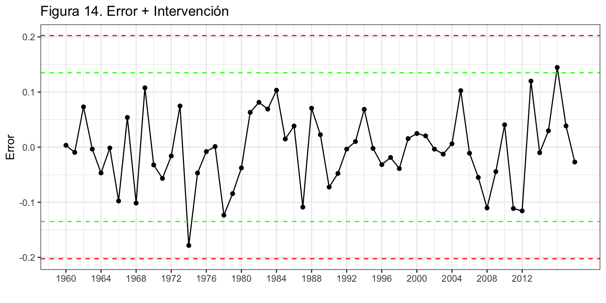
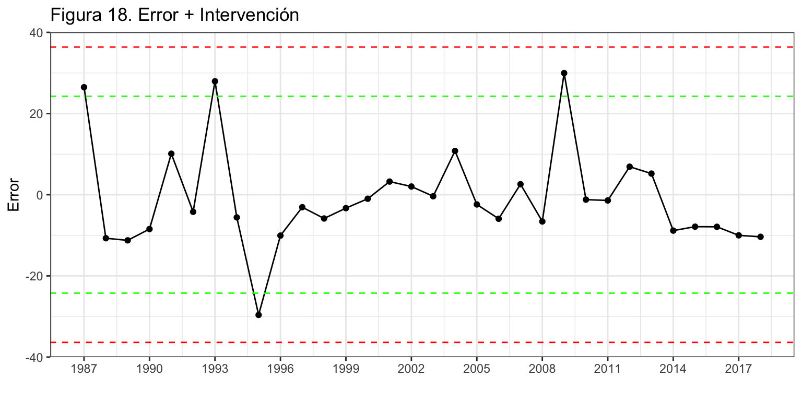
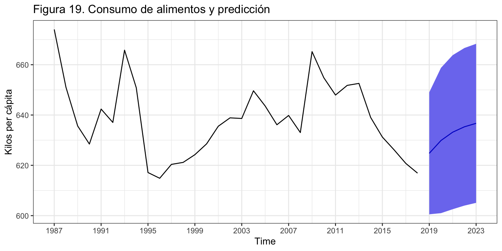

Introducción
Los modelos ARIMA han mostrado ser uno se los métodos de ajuste de series temporales más valiosos desde que fueran formalizados en 1976 por Box y Jenkins, en su libro Time series analysis, forecasting and control. Además, dieron las pautas a seguir en el ajuste de una serie temporal para alcanzar buenas predicciones (véase epígrafe 6).
En este tema, y el siguiente, definiremos estos procesos y aprenderemos a identificarlos, estimarlos y hacer predicciones.
Los procesos ARIMA son ahora el tronco de una amplia familia de procesos que requieren menos hipótesis para su aplicación o ajustan mejor bajo diferentes hipótesis: ARCH, GARCH, NGARCH, IGARCH, EGARCH, GARCH-M, QGARCH, GJR-GARCH, TGARCH, fGARCH…
Los procesos ARIMA y los métodos de Alisado Exponencial son complementarios:
- Los modelos de Alisado lineales son casos especiales de modelos Arima,
- Los modelos de Alisado no lineales no tienen su contrapartida en modelos Arima
- Muchos modelos Arima no tiene contrapartida en los modelos de Alisado.
Pero antes de entrar en materia es necesario definir una serie de conceptos que permitirán entender mejor una serie temporal como una muestra de un proceso generador de datos (PGD).
Proceso estocástico
Definición e hipótesis sobre el proceso
Un proceso estocástico \(Y_t\) es (sin excesiva precisión) una variable aleatoria que corresponde a momentos sucesivos del tiempo. A diferencia de los temas previos, en este vamos a estimar modelos sobre procesos estocásticos. Sería el equivalente para series temporales al modelo de regresión lineal que viste en el primer semestre para datos transversales.
Al igual que en Predicción con datos transversales, la aplicación de estos modelos requiere del cumplimiento de una serie de hipótesis. Para el caso de series temporales el proceso debe ser normal, estacionario y ergódico.
Proceso estacionario
Un proceso es estacionario en sentido estricto cuando la distribución conjunta no varía al realizar un desplazamiento en el tiempo de todas las variables.
- Si \(F(Y_{t_1},..., Y_{t_k})\) es la función de distribución conjunta y \(h>0\), entonces el proceso es estacionario en sentido estricto si \[F(Y_{t_1},..., Y_{t_k}) = F(Y_{t_1+h},..., Y_{t_k+h})\]
Intuitivamente, la distribución de un proceso estocástico es independiente del momento del tiempo.
Comprobar si un proceso es estacionario en sentido estricto es muy difícil, así que vamos a encontrar condiciones suficientes: estacionariedad en media y en sentido amplio (covarianza). Bajo normalidad un proceso estacionario en sentido amplio también lo será en sentido estricto.
Proceso estacionario en media
Un proceso es estacionario en media (o de primer orden) si su nivel se mantiene en el tiempo: \[E[Y_t] = \mu \; \; \forall t\]
Proceso estacionario en sentido amplio
Un proceso (ya estacionario en media) es estacionario en sentido amplio, o de segundo orden, si sus momentos de orden dos no dependen del tiempo:
- La (auto)covarianza entre dos periodos de tiempo es finita y sólo depende del intervalo de tiempo transcurrido entre estos dos periodos: \[Cov[Y_t, Y_{t+k}] = E[(Y_t - \mu)(Y_{t+k} - \mu)] = \gamma_k,\,\,\,\forall t\]
Observa que la varianza será entonces \(Var[Y_t] = E[(Y_t - \mu)^2] = \gamma_0\).
La figura 1 muestra la serie Nacimientos que no es estacionaria ni en media, ni en varianza. No lo es en media por que presenta largos periodos de tendencia creciente y decreciente; y no lo es en varianza por que al inicio de la serie los datos presentna más variabilidad que a finales del siglo pasado.

Proceso ergódico
Para que un proceso sea ergódico las observaciones nuevas tienen que aportar suficiente información para que la varianza del valor medio converja a 0. Esto no ocurre si la dependencia entre las variables es muy fuerte.
Una condición necesaria pero no suficiente para que un proceso estacionario sea ergódico es: \[\lim_{k\rightarrow \infty} \gamma_k = 0.\]
Función de autocorrelación
Si la serie es estacionaria y ergódica, el valor medio de la serie es constante y, por tanto, no informativo. Son las covarianzas los que caracterizan el proceso estocástico.
Recordemos que \(\gamma_k=Cov(y_t,y_{t-k})\) es la autocovarianza de orden k. Por tanto \(\gamma_0\) es la varianza de la serie \(y_t\). Sea \(\rho_k\) la autocorrelación se orden \(k\). Se puede verificar que: \[\rho_k = cor(y_t, y_{t-k}) =\frac{\gamma_k}{\gamma_0}.\]
- \(\rho_1\) mide la información que se transmite de un periodo al siguiente periodo.
- \(\rho_k\) mide la información que se transmite k periodos hacia adelante.
Las autocorrelaciones caracterizan el proceso estocástico, y la función de autocorrelación o correlograma (FAC, o ACF en inglés) es el gráfico de \(r_k\) contra \(k\), donde \(r_k\) es la estimación de \(\rho_k\) obtenida con las observaciones.
La figura 6 muestra la FAC para la serie Nacimientos y algunas de sus transformaciones. Observa el diferente uso del argumento lag: en la función diff indica el orden de la diferenciación, y en la función ggAcf indica el orden máximo de la autocorrelación. La primera columna muestra la FAC para Nacimientos y varias diferenciaciones, mientras que la segunda columna muestra la FAC para el logaritmo de los nacimientos y sus diferenciaciones. Se puede observar que:
- La FAC de una serie y de su transformación logarítmica son muy similares.
- En los paneles de la primera y tercera fila las autocorrelaciones decrecen muy lentamente, indicando que la serie analizada no es estacionaria ni ergódica.
- En los paneles de la segunda fila las autocorrelaciones de orden estacional (12, 24,…) también decrecen lentamente, indicando que la serie analizada no es ergódica.
- Solo la doble diferenciación regular y estacional de la serie (original o su logaritmo) muestran un rápido descenso en los coeficiente de autocorrelación (paneles de la última fila), indicando que la serie así transformada es estacionaria en media y ergódica.
ggAcf(nacimientos, lag = 48)
ggAcf(log(nacimientos), lag = 48)
ggAcf(diff(nacimientos), lag = 48)
ggAcf(diff(log(nacimientos)), lag = 48)
ggAcf(diff(nacimientos, lag = 12),lag = 48)
ggAcf(diff(log(nacimientos), lag = 12), lag = 48)
ggAcf(diff(diff(nacimientos, lag=12)), lag = 48)
ggAcf(diff(diff(log(nacimientos), lag=12)), lag = 48)

También podemos pedir R que nos sugiera los órdenes de diferenciación con las funciones ndiffs y nsdiffs.
[1] 1
[1] 1
Si queremos ver los valores numéricos de las autocorrelaciones debemos añadir a la función ggAfc el argumento plot = FALSE. Para la serie doblemente diferenciada vemos que las relaciones más elevadas se dan para un retardo (\(r_{1}=-0.396\)) y para 12 retardos (\(r_{12}=-0.298\)), el dato que más se parece a los nacimientos de un mes son los nacimientos del mes previo y los nacimientos del mismo mes del año previo.
Autocorrelations of series 'diff(diff(nacimientos), lag = 12)', by lag
0 1 2 3 4 5 6 7 8 9 10
1.000 -0.396 -0.006 0.031 -0.117 -0.045 0.072 -0.038 0.050 0.097 -0.067
11 12
0.105 -0.298
Las bandas azules de la FAC muestran el intervalo de confianza al 95% (IC95). Si \(\rho_k = 0\), la distribución del estimador \(r_k\) se distribuye aproximadamente como una normal de media \(-1/T\) y varianza \(1/T\). Las líneas punteadas de la FAC están dibujadas en las posiciones \(\frac{-1}{T} \pm \frac{1.96}{\sqrt{T}}\).
Si un \(r_k\) cae fuera del IC95 hay evidencia para rechazar la hipótesis nula de que \(\rho_k = 0\) a un nivel del 5%. Recordemos que incluso si todos los \(\rho_k\) son cero, cabe esperar que un 5% de sus estimaciones \(r_k\) caigan fuera del IC95.
Los \(\rho_k\) no son independientes. Si uno cae fuera del IC95, es más probable que los valores vecinos caigan también fuera.
Procesos ARIMA
ARIMA surge de combinar las siglas de tres procesos diferentes: AR de AutoRegresive, I de Integrated y MA de Moving Average. Veamos cada uno de estos tres conceptos por separado y luego su combinación.
A lo largo de lo que resta del tema asumiremos que:
\(\{y_t\}_{t=1}^T\) es una realización de un proceso estocástico desconocido.
El proceso estocástico es estacionario en sentido amplio: \[E[y_t] = \mu < \infty \;\;\; \forall t,\] \[Cov[y_t, y_{t-k}] = \gamma_k \;\;\; \forall k.\]
El proceso estocástico es ergódico, o su condición suficiente: \[\lim_{k \rightarrow \infty} \gamma_k = 0.\]
Procesos autorregresivos AR(p)
Definición
El modelo general autorregresivo de orden p, \(y_t \sim AR(p)\) viene definido por \[y_t=c + \phi_1 y_{t-1} + \phi_2 y_{t-2} + ... + \phi_p y_{t-p} + \varepsilon_t,\] que usando el operador retardo queda \[(1 - \phi_1 L - \phi_2 L^2 - ... - \phi_p L^p)y_t = c + \varepsilon_t\]
En este y en cualquier proceso ARIMA, al polinomio en \(L\) que acompaña a \(y_t\) se le denomina polinomio autoregresivo.
Se suele asumir que el error del modelo \(\varepsilon_t\) verifica las hipótesis estándar de media cero, incorrelación, homocedasticidad e idéntica distribución: \(\varepsilon_t \sim iid(0, \sigma^2)\). En este curso no vamos a prestar atención a este conjunto de hipótesis porque no jugarán ningún papel en la elección del modelo óptimo –aquel con mejores predicciones.
Ejemplos
- \(y_t \sim AR(1): \;\;y_t = c + \phi_1 y_{t-1} + \varepsilon_t\) o \((1 - \phi_1 L)y_t = c + \varepsilon_t\)
- \(y_t \sim AR(2): \;\;y_t = c + \phi_1 y_{t-1} + \phi_2 y_{t-2} + \varepsilon_t\) o \((1 - \phi_1 L - \phi_2 L^2)y_t = c + \varepsilon_t\)
Procesos ARMA(p,q)
Definición
El modelo general \(y_t \sim ARMA(p,q)\) viene dado por \[y_t = c + \phi_1 y_{t-1} + \phi_2 y_{t-2} + ... + \phi_p y_{t-p} +
\theta_1 \varepsilon_{t-1} + \theta_2 \varepsilon_{t-2} + ... +
\theta_q \varepsilon_{t-q}+ \varepsilon_t,\] que usando el operador retardo queda \[(1 - \phi_1 L - ... - \phi_p L^p)y_t = c + (1 + \theta_1 L + ... + \theta_q L^q) \varepsilon_t.\]
Ejemplos
- \(y_t \sim ARMA(1, 1): \;\;y_t = c + \phi_1 y_{t-1} + \theta_1 \varepsilon_{t-1} + \varepsilon_{t}\) o \((1 - \phi_1 L)y_t = c + (1 + \theta_1 L)\varepsilon_t\).
- \(y_t \sim ARMA(0, 0): \;\;y_t = c + \varepsilon_{t}\). Si \(c = 0\), a este proceso se le denommina ruido blanco.
Proceso ARIMA(p,d,q)
Si la serie \(y_t\) no es estacionaria pero tras diferenciarla \(d\) veces se hace estacionaria, diremos que la serie es integrada de orden \(d\): \(y_t \sim I(d)\). Por tanto,
- una serie estacionaria se indicará como \(y_t \sim I(0)\)
- \(y_t \sim I(d)\) es equivalente a \(\nabla^d y_t = (1 - L)^d y_t \sim I(0)\)
Una serie \(y_t\) sigue un proceso \(ARIMA(p,d,q)\) si:
- \(y_t \sim I(d)\) (hay que diferenciarla \(d\) veces para hacerla estacionaria), y
- \(\nabla^d y_t \sim ARMA(p,q)\).
Entonces, podemos escribir: \[y_t \sim ARIMA(p,d,q): \;\;\; (1 - \phi_1 L - \ldots - \phi_p L^p)(1- L)^d y_t = c + (1 + \theta_1 L + ... + \theta_q L^q) \varepsilon_t.\]
Ejemplos
- \(y_t \sim ARIMA(1, 1, 1): \;\;(1 - \phi_1 L)(1- L) y_t = c + (1 + \theta_1 L) \varepsilon_t\) o \(y_t = c + y_{t-1} + \phi_1(y_{t-1} - y_{t-2}) + \theta_1 \varepsilon_{t-1} + \varepsilon_t\).
- \(y_t \sim ARIMA(0, 1, 0): \;\;(1- L) y_t = c + \varepsilon_t\) o \(y_t = c + y_{t-1} + \varepsilon_t\). Si \(c=0\), tenemos un paseo aletorio; si \(c \neq 0\), tenemos un paseo aleatorio con deriva.
Aproximación de Box-Jenkins
La siguiente figura muestra el flujo de procesos asociado a la modelización por modelos ARIMA, con cuatro grandes áreas:
Identificación, que requiere primero transformar la serie para que sea estacionaria y ergódica, para después identificar los valores de p y q.
La FAC y la función de autocorrelación parcial (que no hemos visto) teóricas son diferentes en cada tipo de proceso. Idealmente, su estimación a partir de la serie temporal podría servir de ayuda en la identificación del proceso estocástico. En la práctica, la funciones estimadas son tan diferentes de las teóricas que resultan de muy poca ayuda.
Nosotros haremos uso de algunas funciones de auto identificación que nos ayudaran en este punto.
Estimación de los parámetros del modelo, incluidas las variables de intervención y obtención del error. Dado un proceso, el método usual de estimación de sus parámetros es por máxima verosimilitud.
Validación de las hipótesis sobre el modelo.
En un curso tradicional de modelos Arima supondría validar la hipótesis sobre el residuo, contrastes de significatividad de los parámetros estimados y comprobación de que no hay más intervención.
En nuestro caso, que hemos reducido las hipótesis a su mínima expresión, simplemente analizaremos que no es necesaria más intervención y veremos la pertinencia de los parámetros del modelo (bien contrastando su significatividad o bien por alguna regla más sencilla).
Si la validación no se pasa, puede ser necesario volver al proceso inicial y realizar una nueva identificación del modelo.
Predicción e interpretación del modelo válido. Si las predicciones se alejan de los valores reales más de lo esperado o presentan sesgo, puede ser necesario identificar y estimar un nuevo modelo.

Identificación automática
El paquete forecast dispone de la función auto.arima() que localiza el mejor modelo basándose en el AIC corregido para pequeñas muestras (AICc). No hay que fiarse ciegamente de los resultados de esta función, pero ayuda en la identificación. Básicamente el algoritmo seguido es el siguiente:
- Determina el orden de diferenciación regular \(0 \leq d \leq 2\) usando la función
ndiffs.
- Tras diferenciar la serie:
- se estiman una serie de modelos básicos predeterminados.
- se usa el criterio AICc para seleccionar el mejor de estos modelos.
- a partir del modelo seleccionado, se hacen pequeñas variaciones modificando en una unidad p y q y añadiendo/quitando la constante y se vuelve a seleccionar el mejor de los nuevos modelos.
- Se repite el paso 2 hasta que no se puede mejorar el AICc.
Cuando usemos esta función, debemos tener cuenta que:
- La función
auto.arima no permite contante si la suma de las diferenciaciones es 2 o superior.
- Si se desea hacer una búsqueda exhaustiva entre todos los posibles modelos se debe usar el argumento
stepwise = FALSE.
- Si se desea que el cálculo de AICc sea exacto (por defecto para ganar tiempo calcula una aproximación), se debe usar el argumento
approximation = FALSE.
- Si se desea ver para todos los modelos analizados el valor de AICc, se debe incluir el argumento
trace = TRUE.
La función auto.arima tiende a sobre-parametrizar los modelos y es muy recomendable ayudarla indicando las diferenciaciones, los posibles valores extremos…
Ejemplos
Títulos de libros y panfletos
Vamos a aplicar la metodología de Box-Jenkins a la serie Libros (número de títulos publicados anualmente en España desde 1993 hasta 2018).

Identificación
Tras diferenciar la serie, vamos a identificar los valores de \(p\) y \(q\). Este es el proceso más difícil y para simplificar las cosas vamos a ayudarnos de la función auto.arima.
ARIMA(2,1,2) with drift : Inf
ARIMA(0,1,0) with drift : 510.0603
ARIMA(1,1,0) with drift : 512.623
ARIMA(0,1,1) with drift : 512.6173
ARIMA(0,1,0) : 508.2017
ARIMA(1,1,1) with drift : Inf
Best model: ARIMA(0,1,0)
Series: libros
ARIMA(0,1,0)
sigma^2 estimated as 36151817: log likelihood=-253.01
AIC=508.03 AICc=508.2 BIC=509.25
Observa como la identificación automática da como mejor modelo \(libros_t \sim ARIMA(0,1,0)\) sin deriva, por tanto, ruido blanco, \(p=q=0\): \[libros_t = libros_{t-1} + \varepsilon_t\]
Estimación
Aunque existe la función arima de stats, vamos a usar la función Arima de la librería forecast para estimar el modelo identificado por ser más versátil. El argumento order indica los valores de (p, d , q) como un vector y el argumento lógico include.constant indica si se desea incluir la constante \(c\) en el modelo. (Mira en la ayuda de la función Arima la diferencia entre los argumentos include.mean, include.drift e include.constant).
Series: libros
ARIMA(0,1,0)
sigma^2 estimated as 36151817: log likelihood=-253.01
AIC=508.03 AICc=508.2 BIC=509.25
Nuestro modelo estimado es: \(\widehat{libros}_t = libros_{t-1}\). La mejor predicción para un año, es la observación del año anterior, ¡el método ingenuo I!
Intervención
Se analiza si para algún año se observa un error atípico (por ejemplo 3 veces superior al error estándar). La figura 9 muestra que en este caso en dos periodos, años 2008 y 2013, el residuo sobrepasa los dos errores estándar pero queda lejos de los tres errores estándar así que asumiremos que no hay valores atípicos.
error <- residuals(arima010)
sderror <- sd(error)
autoplot(error, series="Error",
colour = "black",
xlab = "",
ylab = "Error",
main = "Figura 9. Error + Intervención") +
geom_hline(yintercept = c(-3, -2, 2, 3)*sderror,
colour = c("red", "green", "green", "red"),
lty = 2) +
geom_point() +
scale_x_continuous(breaks= seq(1993, 2019, 2))

Medidas de error
El error medio es 5896 títulos (RMSE) y el error porcentual medio (MAPE) es 7.02%.
ME RMSE MAE MPE MAPE MASE ACF1
Training set 825.49 5895.88 4450.03 1.23 7.02 0.96 -0.04
Predicción
Una vez validado el modelo podemos pasar a realizar predicciones, en este caso a 5 años vista.
Point Forecast Lo 95 Hi 95
2019 62180 50395.45 73964.55
2020 62180 45514.12 78845.88
2021 62180 41768.55 82591.45
2022 62180 38610.89 85749.11
2023 62180 35828.94 88531.06

La figura 10 muestra la serie, la previsión y el intervalo de confianza al 95%. La predicción es constante e igual al último dato. En las series diferenciadas el intervalo de confianza de las predicciones crece muy rápidamente porque los errores se van acumulando sin ningún tipo de amortiguamiento.
Aforo de vehículos
Vamos a aplicar de nuevo la metodología de Box-Jenkins a la serie aforo de vehículos por Oropesa, carretera N-340, km. 996,48 (fuente Ministerio de Fomento). La serie es anual de 1960 a 2018 (59 datos).

En este ejemplo vamos a trabajar con el logaritmo de la serie para poder ver algunos detalles relacionados con la interpretación del modelo y la predicción. Además, incluiremos, por primera vez, intervención y veremos como la presencia de valores atípicos puede distorsionar el proceso de identificación. Por ello, es conveniente realizar en paralelo ambas actividades, identificar el proceso y detectar valores atípicos.
Identificación
Veamos a identificar los valores de \(p\) y \(q\) a partir de auto.arima. La función sugiere un proceso MA(2). Parece que los dos coeficientes estimados son significativos –la estimación es mayor que dos veces su error estándar (standard error, s.e).
Series: aforo
ARIMA(0,2,2)
Box Cox transformation: lambda= 0
Coefficients:
ma1 ma2
-0.8545 0.4642
s.e. 0.1331 0.1666
sigma^2 estimated as 0.007095: log likelihood=60.72
AIC=-115.44 AICc=-114.99 BIC=-109.32
Vamos a ver la gráfica de los residuos del modelo MA(2), vamos a identificar los valores extremos (intervención) y vamos a solicitar una vez más la auto-identificación pero incluyendo las variables ficticias asociadas a cada valor extremo.
arima022 <- Arima(aforo,
order = c(0, 2, 2),
lambda = 0)
error <- residuals(arima022)
sderror <- sd(error)
autoplot(error, series="Error",
colour = "black",
xlab = "",
ylab = "Error",
main = "Figura 13. Error + Intervención") +
geom_hline(yintercept = c(-3, -2, 2, 3)*sderror,
colour = c("red", "green", "green", "red"),
lty = 2) +
geom_point() +
scale_x_continuous(breaks= seq(1960, 2014, 4))

Se identifican dos posibles valores extremos en los años 1979 y 1981. Además, vamos a incluir otras dos intervenciones para los años 1984 y 2011 porque si no serían necesarias más adelante. Entonces, creamos una variable ficticia asociada a cada año d1979, d1981, d1984 y d2011, y las incluimos en la auto-identificación.
Series: aforo
Regression with ARIMA(1,2,0) errors
Box Cox transformation: lambda= 0
Coefficients:
ar1 d1979 d1981 d1984 d2011
-0.6561 -0.1522 0.0841 0.0773 -0.0881
s.e. 0.1013 0.0409 0.0413 0.0384 0.0374
sigma^2 estimated as 0.005104: log likelihood=71.88
AIC=-131.76 AICc=-130.08 BIC=-119.51
Observa como la inclusión de intervención modifica la auto-identificación, que ahora es un proceso ARIMA(1,2,0). Asumimos que \(log(aforo_t) \sim ARIMA(1,2,0)\) con intervención.
Estimación
Series: aforo
Regression with ARIMA(1,2,0) errors
Box Cox transformation: lambda= 0
Coefficients:
ar1 d1979 d1981 d1984 d2011
-0.6561 -0.1522 0.0841 0.0773 -0.0881
s.e. 0.1013 0.0409 0.0413 0.0384 0.0374
sigma^2 estimated as 0.005104: log likelihood=71.88
AIC=-131.76 AICc=-130.08 BIC=-119.51
La identificación de errores atípicos –para la posterior inclusión de sus variables de intervención asociadas– ha sido un tanto arbitraria: ¿es atípico el error que supera las 2 desviaciones típicas, las dos y media, las tres desviaciones típicas?
A fin de poner un poco de objetividad en la decisión, podemos ver si sus coeficientes son significativos y dejar solo aquellas variables de intervención que lo sean. Aunque si la serie es suficientemente larga, también podríamos saltarnos este paso y dejar las variables de intervención que mejoren las predicciones extra-muestrales del modelo o las que recojan efectos con una gran evidencia.
La prueba de Wald permite contrastar si un subconjunto de coeficientes es significativo (se precisa la librería aod). Esta función requiere de tres argumentos: el vector de coeficientes (b), su matriz de covarianzas (Sigma) y la posición de los coeficientes cuya significatividad conjunta deseamos contrastar (Terms). Los dos primeros argumentos los podemos obtener del objeto arima120 con las funciones coef y vcov.
Por ejemplo, para ver la significatividad de la primera variable de intervención (segundo coeficiente del modelo), tendríamos
Wald test:
----------
Chi-squared test:
X2 = 13.9, df = 1, P(> X2) = 0.0002
Con algo más de código se puede comprobar que todas las variables son significativas.
Coeficiente: ar1 valor de p: 0.0000
Coeficiente: d1979 valor de p: 0.0002
Coeficiente: d1981 valor de p: 0.0415
Coeficiente: d1984 valor de p: 0.0441
Coeficiente: d2011 valor de p: 0.0185
Intervención
La figura 14 muestra que para ningún año se observa un error atípico. Si se incluye una intervención asociada al residuo más elevado en 1974, no resulta significativa.
error <- residuals(arima120)
sderror <- sd(error)
autoplot(error, series="Error",
colour = "black",
xlab = "",
ylab = "Error",
main = "Figura 14. Error + Intervención") +
geom_hline(yintercept = c(-3, -2, 2, 3)*sderror,
colour = c("red", "green", "green", "red"),
lty = 2) +
geom_point() +
scale_x_continuous(breaks= seq(1960, 2014, 4))

Medidas de error
El error medio es 748 miles de vehículos (RMSE) y el error porcentual medio (MAPE) es 5.24%.
ME RMSE MAE MPE MAPE MASE ACF1
Training set -94.73 747.64 546.69 -0.69 5.24 0.79 0.08
Interpretación del modelo
El modelo teórico es \(log(aforo_t) \sim ARIMA(1,2,0) + d1979 + d1981 + d9184 + d2011\): \[(1 - \phi_1 L)(1 - L)^2 log(aforo_t) = \varepsilon_t + \gamma_1 \cdot d1979 + \gamma_2 \cdot d1981 + \gamma_3 \cdot d1984 + \gamma_4 \cdot d2011.\]
Si sustituimos \((1 - L)^2 log(aforo_t)\) por \((1 - L) TVAaforo_t\), donde \(TVAaforo\) es la tasa de variación anual del aforo, y desarrollamos, queda: \[TVAaforo_t = TVAaforo_{t-1} + \phi_1(TVAaforo_{t-1}-TVAaforo_{t-2}) +\] \[\gamma_1 \cdot d1979 + \gamma_2 \cdot d1981 + \gamma_3 \cdot d1984 + \gamma_4 \cdot d2011 + \varepsilon_t.\]
Finalmente. el modelo estimado es: \[\widehat{TVAaforo}_t = TVAaforo_{t-1} -0.66(TVAaforo_{t-1}-TVAaforo_{t-2}) + \] \[ - 0.15 \cdot d1979 + 0.08 \cdot d1981 + 0.08 \cdot d1984 - 0.09 \cdot d2011.\] Cada año la tasa de variación del aforo es el misma que la del año pasado menos un 66% del último incremento entre las tasas de variación.
Respecto de la intervención, en 1979 hubo un 15% menos de vehículos de lo esperado, en 1981 y 1984 en torno a un 8% más y en 2011 un 9% menos.
Predicción
Como hemos incluido cuatro variables ficticias en el ajuste, de cara a predecir el aforo hemos de indicar cuales serán los valores futuros para estas variables. En este caso serán ceros puesto que son intervenciones que no responden a efectos calendario.
En R esto se hace incluyendo en el comando forecast el argumento xreg = cbind(rep(0, 5), rep(0, 5), rep(0, 5), rep(0, 5)) que añade cinco ceros por cada variable de intervención porque la predicción va a ser a cinco años vista.
parima120 <- forecast(arima120,
h = 5,
level = 95,
xreg = cbind(d1979=rep(0, 5), d1981=rep(0, 5),
d1984=rep(0, 5), d2011=rep(0, 5)))
parima120
Point Forecast Lo 95 Hi 95
2019 10010.48 8702.487 11515.06
2020 10134.58 8015.691 12813.59
2021 10310.85 7064.336 15049.35
2022 10456.36 6179.997 17691.84
2023 10626.42 5282.780 21375.26

Aforo de vehículos revisado
Vamos a volver a identificar el mejor modelo ARIMA para la serie Aforo, pero cambiando el enfoque. La función de autoidentificación usa como criterio de optimalidad un criterio de ajuste (AIC, BIC). Si lo que deseamos es identificar el modelo con mejores predicciones extra-muestrales, hay que proceder de otra forma. Vamos seleccionar un conjunto amplio de modelos, vamos a estimar cada uno de ellos y vamos a calcular el error (MAPE) para previsones extra-muestrales según el horizonte temporal. El mejor modelo será el que cometa menor error de previsión para el horizonte temporal necesario.
El siguiente código define un total de 96 modelos, resultado de la combinación de los posibles valores del orden autoregresivo \(p = 0, 1, 2, 3\); el número de diferenciaciones \(d = 0, 1, 2\); los posibles valores del orden en medias móviles \(q = 0, 1, 2, 3\) y el uso de la transformación logarítmica (sí/no).
Por simplicidad, hemos asumido que el modelo no tiene constante y no hemos incluido la intervención.
Por defecto, la función Arima solo estima modelos estacionarios. Para eludir esta restricción y que estime cualquier modelo, sea o no estacionario, hemos incluido el argumento method = "ML".
p <- 0:3
d <- 0:2
q <- 0:3
l <- 0:1
parametros <- expand.grid(p,d,q,l)
colnames(parametros) <- c("p", "d", "q", "log")
k <- 40 #Minimo numero de datos para estimar
h <- 5 #Horizonte de las predicicones
TT <- length(aforo) #Longitud serie
s <- TT - k - h #Total de estimaciones
MAPE <- matrix(NA, nrow(parametros), h)
for (para in 1:nrow(parametros)) {
identificacion <- as.numeric(parametros[para, - 4])
mapeArima <- matrix(NA, s + 1, h)
for (i in 0:s) {
train.set <- subset(aforo, start = i + 1, end = i + k)
test.set <- subset(aforo, start = i + k + 1, end = i + k + h)
if(parametros[para, 4] == 0)
fit <- Arima(train.set, order = identificacion, method = "ML") else
fit <- Arima(train.set, order = identificacion,
lambda = 0, method = "ML")
fcast <- forecast(fit, h = h)
mapeArima[i + 1,] <- 100*abs(test.set - fcast$mean)/test.set
}
MAPE[para, ] <- colMeans(mapeArima)
}
# Mejores modelos si h = 1
ii <- order(MAPE[, 1], decreasing = FALSE)
cbind(parametros[ii[1:3],], error = round(MAPE[ii[1:3], 1], 3))
| 79 |
2 |
1 |
2 |
1 |
4.408 |
| 59 |
2 |
2 |
0 |
1 |
4.598 |
| 23 |
2 |
2 |
1 |
0 |
4.654 |
| 87 |
2 |
0 |
3 |
1 |
8.085 |
| 88 |
3 |
0 |
3 |
1 |
8.718 |
| 64 |
3 |
0 |
1 |
1 |
8.740 |
| 87 |
2 |
0 |
3 |
1 |
10.754 |
| 88 |
3 |
0 |
3 |
1 |
10.765 |
| 64 |
3 |
0 |
1 |
1 |
11.390 |
| 87 |
2 |
0 |
3 |
1 |
14.494 |
| 88 |
3 |
0 |
3 |
1 |
15.064 |
| 64 |
3 |
0 |
1 |
1 |
15.650 |
| 87 |
2 |
0 |
3 |
1 |
18.746 |
| 63 |
2 |
0 |
1 |
1 |
19.225 |
| 88 |
3 |
0 |
3 |
1 |
19.556 |
Las tablas identifican los tres mejores modelos según que el orden de previsión de interés, desde uno a cinco años.
- Para previsiones a un año vista el mejor modelo es \(log(Aforo_t) \sim ARIMA(2,1,2)\). Aunque los otros dos modelos mostrados resultan equivalentes.
- Para previsiones a más de un año vista el mejor modelo es \(log(Aforo_t) \sim ARIMA(2,0,3)\), en ocasiones muy superior al siguiente mejor modelo.
- Ninguno de los modelo que mejores predicciones generan es el que mejor ajusta a los datos.
Consumo de alimentos en el hogar per cápita
Analizaremos el consumo alimentario en hogar per cápita en España. Esta serie está construida a partir de la serie de consumo alimentario en hogar (disponible en el Ministerio de Agricultura, Alimentación y Medio Ambiente), y la serie de población (disponible en el Instituto Nacional de Estadística). Es una serie anual de 1987 a 2018 (32 datos) y la unidad es el Kg per cápita. La figura 23 muestra que es una serie muy irregular, con cambios de tendencia constantes.

Identificación
Para identificar los valores de \(p\) y \(q\) veremos que nos sugiere auto.arima :
Series: alimentospc
ARIMA(1,0,0) with non-zero mean
Coefficients:
ar1 mean
0.6477 639.2512
s.e. 0.1561 5.7083
sigma^2 estimated as 153: log likelihood=-125.13
AIC=256.26 AICc=257.12 BIC=260.66
La identificación automática sugiere un proceso AR(1) con constante y ambos coeficientes parecen significativos.
Vamos a ver la gráfica de los residuos de este proceso para identificar rápidamente si hay valores extremos (figura 18).
arima100 <- Arima(alimentospc,
order = c(1, 0, 0))
error <- residuals(arima100)
sderror <- sd(error)
autoplot(error, series="Error",
colour = "black",
xlab = "",
ylab = "Error",
main = "Figura 18. Error + Intervención") +
geom_hline(yintercept = c(-3, -2, 2, 3)*sderror,
colour = c("red", "green", "green", "red"),
lty = 2) +
geom_point() +
scale_x_continuous(breaks= seq(1987, 2018, 3))

Ningún residuo supera las 2.5 desviaciones típicas así que consideraremos que \(alimentospc_t \sim ARIMA(1,0,0)\).
Coeficientes significativos
Tanto \(\phi_1\) como \(\mu\) (la constante del modelo) son significativos.
Wald test:
----------
Chi-squared test:
X2 = 17.2, df = 1, P(> X2) = 0.000033
Wald test:
----------
Chi-squared test:
X2 = 12540.9, df = 1, P(> X2) = 0.0
Medidas de error
El error medio es 12 Kg per cápita (RMSE) y el error porcentual medio (MAPE) es 1.37%.
ME RMSE MAE MPE MAPE MASE ACF1
Training set -0.96 11.98 8.79 -0.18 1.37 0.93 0.01
Interpretación del modelo
El modelo teórico identificado es \(alimentospc_t \sim ARIMA(1,0,0)\) + constante: \[(1 - \phi_1 L) alimentospc_t = c + \varepsilon_t,\]
que desarrollando queda: \[alimentospc_t = c + \phi_1 alimentospc_{t-1}+ \varepsilon_t.\]
Finalmente. el modelo estimado es: \[\widehat{alimentospc}_t = 225.21 + 0.65 \cdot alimentospc_{t-1}\]
Observación: El término contante \(\mu\) que estima R no el valor de “c” que hemos visto en la teoría. Para convertir la contante estimada por R en “c” hemos de multiplicarla por el polinomio autoregresivo. En este caso, \[c = \mu \cdot (1 - \phi_1) = 639.2512\cdot(1 - 0.6477) = 225.2082.\]
Cada año el consumo de alimentos per cápita en el hogar es 225 kilos más un 65% del consumo del año pasado.
Predicciones de la serie
Point Forecast Lo 95 Hi 95
2019 624.7740 600.5313 649.0167
2020 629.8742 600.9905 658.7579
2021 633.1776 602.5556 663.7996
2022 635.3173 603.9947 666.6399
2023 636.7032 605.0913 668.3150
Puedes comprobar que cada valor de la predicción se ha obtenido a partir del modelo estimado, donde \(alimentospc_{t-1}\) se sustituye por la predicción del año precedente.

Comparación con alisado exponencial
Veamos una comparativa, para los tres ejemplos vistos, entre los resultados obtenidos con ARIMA y con Alisado exponencial.
- Libros:
MAPE ARIMA: \(7.02\%\) - ARIMA(0,1,0) sin deriva
MAPE ETS: \(7.05\%\) - ETS(M,N,N), \(\alpha=1\)
Ambos métodos han estimado el mismo modelo.
- Aforo (log):
MAPE ARIMA: \(5.24\%\) - ARIMA(1,2,0) sin deriva, con intervención
MAPE ETS: \(5.73\%\) - ETS(A,Ad,N), \(\alpha=0.57\), \(\beta=0.57\), \(\phi = 0.85\)
Cada método estima un modelo diferente
ARIMA tiene menor error a costa de incluir cuatro variables de intervención
- Alimentos per cápita:
MAPE ARIMA: \(1.37\) - ARIMA(1,0,0) con constante
MAPE ETS: \(1.43\) - ETS(M,N,N), \(\alpha = 1\)
Cada método ha estimado un modelo diferente, pero con una bondad de ajuste similar.
Resumen de los comandos utilizados
Arima |
forecast |
estima un proceso ARIMA |
auto.arima |
forecast |
identificación automática de un modelo ARIMA |
wald.test |
aod |
contrasta la significatividad conjunta de varios parámetros |
forecast |
forecast |
realiza una predicción de un modelo |
Referencias
- Box, G. E.P. y Jenkins, G. (1976). Time Series Analysis: Forecasting and Control Editado por Holden-Day, San Francisco, CA
